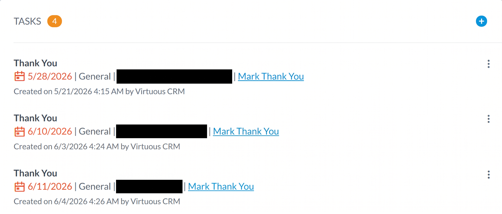

Every task in your dashboard's TASKS panel is created automatically; you don't add them by hand. This page explains the task types you'll see, what triggers each one, and where to find them. The short version: almost every task is about a partner on your case load, someone you're personally building a relationship with.
Where Your Tasks Show Up
Your assigned tasks appear in the TASKS panel on your Virtuous dashboard. The orange number badge shows how many are waiting. Each task is a single row:

Reading a task row, top to bottom:
- The task type in bold at the top (here, “Thank You”).
- The due date, when to act by.
- General, the task category.
- The partner the task is about (redacted above).
- The workflow name that created it, such as Mark Thank You. This tells you exactly which workflow fired.
- A “Created on … by Virtuous CRM” line. Your tasks are generated by the system, usually overnight.
The Task Types
There are four task types. For each one, here is what sets it off, the exact wording you'll see, and which list it draws from.
Birthday
A heads-up that a partner's birthday is coming up. Your cue to send a card or a note.
- Triggers when
- An individual on your list has an upcoming birthday.
- You'll see
- “This person's birthday is upcoming”
- Pulls from
- Individuals in your organization group list.
Thank You
Someone on your case load just gave. Reach out and thank them.
This is the important one for non-financial staff: you don't see giving data directly, so the Thank You task is how you learn that a partner has donated.
- Triggers when
- A contact in your group makes a recent donation.
- You'll see
- “thank a donor from your group for a recent donation”
- Pulls from
- Contacts in your organization group list.
Prelapse Donor Alert
A partner is slipping away. An early warning so you can re-engage before they fully lapse.
- Triggers when
- A contact has not given in 6 months and is tagged Prelapsed. See the Prelapsed tag.
- You'll see
- “This contact has not given within 6 months and tagged at ‘prelapsed’”
- Pulls from
- Contacts in your organization group list.
Immediate Recurring Missed
A partner's expected recurring gift didn't come through. The task appears as soon as a payment is missed, so you can follow up right away.
- Triggers when
- A tracked recurring gift on your case load becomes past due.
- Pulls from
- Case-load donors with tracked recurring gifts.
Where These Lists Come From
Every task type above pulls from a Virtuous organization group list, which is your case load. That means every task you get is about a partner you're personally developing a relationship with.
There are two exceptions, both named No Case Load Overseer - Prelapse Donor Alert (one routed to John-Mark, one to Shelly). These don't come from a case-load list. They are org-wide safety nets that catch prelapsing donors who have no overseer assigned at all, around a thousand contacts each, so nobody slips through the cracks.
Users & Their Workflows
Which task types each case-load worker currently has set up:
| Person | Birthday | Thank You | Prelapse | No-Caseload Prelapse | Recurring Missed |
|---|---|---|---|---|---|
| Carrie | ✓ | ✓ | |||
| Charis | ✓ | ✓ | ✓ | ||
| David (Genn) | ✓ | ✓ | ✓ | ✓ | |
| Francois (FB) | ✓ | ✓ | |||
| John-Mark (JME) | ✓ | ✓ | ✓ | ✓ | |
| Larry | ✓ | ✓ | ✓ | ✓ | |
| Mark | ✓ | ✓ | ✓ | ||
| Shelly | ✓ | ✓ | ✓ | ✓ | ✓ |
Immediate Recurring Missed applies to every case load with tracked recurring donors.
Key Takeaways
- Every task in your TASKS panel is created automatically, and it's about a partner on your case load.
- Birthday: an upcoming birthday for someone on your list.
- Thank You: your signal that a partner just gave. Reach out and thank them.
- Prelapse Donor Alert: a partner tagged Prelapsed hasn't given in 6 months. Re-engage them.
- Immediate Recurring Missed: a partner's expected recurring gift was missed.
- The only tasks not tied to your case load are the two No Case Load Overseer catch-alls (John-Mark and Shelly).